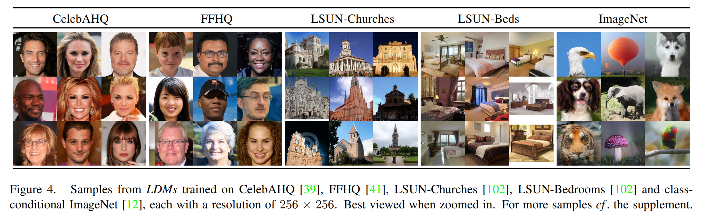

全文翻译
摘要
通过将图像生成过程分解为去噪自编码器的顺序应用，扩散模型（DMs）在图像数据及其他领域取得了最先进的合成结果。此外，其公式允许在无需重新训练的情况下，通过一种引导机制来控制图像生成过程。然而，由于这些模型通常直接在像素空间中运行，训练强大的扩散模型往往需要消耗数百个GPU日的计算资源，并且由于顺序评估，推理成本也很高。为了在有限的计算资源上训练扩散模型，同时保持其质量和灵活性，我们将其应用于强大的预训练自编码器的潜在空间中。与以往的工作不同，在这种表示上训练扩散模型首次在降低复杂度和保留细节之间达到了接近最优的平衡，极大地提高了视觉保真度。通过在模型架构中引入交叉注意力层，我们将扩散模型转变为强大且灵活的生成器，适用于文本或边界框等一般条件输入，并且以卷积方式实现高分辨率合成也成为可能。我们的潜在扩散模型（LDMs）在图像修复和类别条件图像合成方面取得了新的最先进分数，在包括文本到图像合成、无条件图像生成和超分辨率在内的各种任务中表现出极具竞争力的性能，同时与基于像素的扩散模型相比，显著降低了计算需求。
1. 引言
图像合成是计算机视觉领域中近年来发展最为显著的领域之一，但也是计算需求最大的领域之一。特别是复杂自然场景的高分辨率合成，目前主要通过扩展基于似然的模型来实现，自回归（AR）Transformer中可能包含数十亿个参数 。相比之下，生成对抗网络（GANs）虽取得了有前景的成果，但大多局限于可变性相对有限的数据，因为其对抗学习过程难以扩展到对复杂多模态分布的建模。最近，由一系列去噪自编码器构建的扩散模型（DMs）在图像合成及其他领域展现出了令人瞩目的成果，在类别条件图像合成和超分辨率方面达到了最先进水平。此外，与其他类型的生成模型不同，即使是无条件的扩散模型也能轻松应用于图像修复、彩色化或基于笔画的合成等任务。作为基于似然的模型，它们不会像生成对抗网络那样出现模式崩溃和训练不稳定的问题，并且通过大量利用参数共享，能够在不涉及自回归模型中数十亿参数的情况下，对自然图像的高度复杂分布进行建模。
 |
|---|
| 图1. 通过较温和的下采样提升可实现质量的上限。由于扩散模型对空间数据具有出色的归纳偏差，我们在潜在空间中无需像相关生成模型那样进行重度空间下采样，而是可以通过合适的自动编码模型大幅降低数据维度，详见第3节。图像来自DIV2K[1]验证集，在512×512像素分辨率下进行评估。我们用f表示空间下采样因子。重建的FID[29]和PSNR是在ImageNet-val[12]上计算得出的；另见表8。 |
1.1 高分辨率图像合成的普及
扩散模型属于基于似然的模型类别，这类模型的模式覆盖特性使其倾向于在对数据中难以察觉的细节进行建模时消耗过多的容量（进而消耗计算资源）。尽管重新加权的变分目标试图通过对初始去噪步骤进行欠采样来解决这个问题，但扩散模型的计算需求仍然很高，因为训练和评估这样的模型需要在高维RGB图像空间中反复进行函数求值（以及梯度计算）。例如，训练最强大的扩散模型通常需要数百个GPU日（如在文献中需要150 - 1000个V100 GPU日），并且在输入空间的噪声版本上进行反复评估也使得推理成本高昂。因此，在单个A100 GPU上生成50,000个样本大约需要5天。这对研究界和普通用户产生了两个影响：首先，训练这样的模型需要大量计算资源，而这些资源仅少数研究人员能够获取，同时还会产生巨大的碳足迹；其次，评估一个已经训练好的模型在时间和内存方面的成本也很高，因为相同的模型架构必须按顺序运行大量步骤（如在文献中为25 - 1000步）。
为了提高这类强大模型的可及性，同时减少其显著的资源消耗，需要一种能够降低训练和采样计算复杂度的方法。因此，在不损害扩散模型性能的前提下降低其计算需求，是提高其可及性的关键。
1.2 迈向潜在空间
我们的方法从分析已经在像素空间中训练好的扩散模型开始：图2展示了一个训练好的模型的率失真权衡。与任何基于似然的模型一样，学习过程大致可以分为两个阶段：第一个是感知压缩阶段，此阶段去除高频细节，但对语义变化的学习较少。在第二个阶段，实际的生成模型学习数据的语义和概念构成（语义压缩）。因此，我们旨在首先找到一个在感知上等效，但计算上更合适的空间，在这个空间中训练用于高分辨率图像合成的扩散模型。
按照惯例，我们将训练分为两个不同的阶段：首先，训练一个自编码器，它提供一个低维（因此高效）的表示空间，这个空间在感知上与数据空间等效。重要的是，与以往的工作不同，我们不需要依赖过度的空间压缩，因为我们在学习到的潜在空间中训练扩散模型，这个潜在空间在空间维度上具有更好的缩放属性。降低的复杂度还使得从潜在空间通过单个网络前向传递就能高效生成图像。我们将由此产生的模型类别称为潜在扩散模型（LDMs）。
这种方法的一个显著优点是，我们只需要训练通用的自编码阶段一次，因此可以将其重新用于多个扩散模型的训练，或者探索可能完全不同的任务。这使得我们能够高效地探索大量用于各种图像到图像和文本到图像任务的扩散模型。对于后者，我们设计了一种架构，将Transformer连接到扩散模型的UNet骨干网络，并实现任意类型的基于令牌的条件机制，详见3.3节。
 |
|---|
| 图2. 感知压缩和语义压缩示意图：数字图像的大部分比特信息对应着难以察觉的细节。虽然扩散模型（DMs）可以通过最小化相关损失项来抑制这些语义上无意义的信息，但（训练过程中的）梯度计算和神经网络骨干（训练和推理过程中）仍需在所有像素上进行评估，这导致了多余的计算，以及不必要的高昂优化和推理成本。我们提出潜在扩散模型（LDMs），它是一种有效的生成模型，且有一个单独的轻度压缩阶段，仅消除难以察觉的细节。数据和图像来自文献[30]。 |
总之，我们的工作做出了以下贡献：
- 与纯粹基于Transformer的方法不同，我们的方法在处理高维数据时具有更好的扩展性，因此：（a）在压缩级别上能够提供比以往工作更准确、更详细的重建（见图1）；（b）可以高效地应用于百万像素图像的高分辨率合成。
- 我们在多个任务（无条件图像合成、图像修复、随机超分辨率）和数据集上实现了有竞争力的性能，同时显著降低了计算成本。与基于像素的扩散方法相比，我们还大幅降低了推理成本。
- 我们证明，与以往同时学习编码器/解码器架构和基于分数的先验的工作不同，我们的方法不需要对重建能力和生成能力进行精细的权衡。这确保了极高的重建精度，并且对潜在空间的正则化要求极低。
- 我们发现，对于超分辨率、图像修复和语义合成等密集条件任务，我们的模型可以以卷积方式应用，并生成尺寸约为$1024^2$像素的大型、连贯图像。
- 此外，我们设计了一种基于交叉注意力的通用条件机制，支持多模态训练。我们使用它来训练类别条件、文本到图像和布局到图像的模型。
- 最后，我们在https://github.com/CompVis/latent-diffusion上发布了预训练的潜在扩散模型和自编码模型，这些模型除了用于扩散模型的训练外，还可能在各种任务中重复使用。
2. 相关工作
2.1 图像合成的生成模型
图像的高维特性给生成建模带来了独特的挑战。生成对抗网络（GAN）能够高效地采样生成具有良好感知质量的高分辨率图像，但优化难度较大，且难以捕捉完整的数据分布。相比之下，基于似然的方法强调良好的密度估计，这使得优化过程更加稳定。变分自编码器（VAE）和基于流的模型能够有效地合成高分辨率图像，但样本质量与GAN相比仍有差距。虽然自回归模型（ARM）在密度估计方面表现出色，但计算成本高昂的架构和顺序采样过程将其限制在低分辨率图像生成上。由于基于像素的图像表示包含几乎难以察觉的高频细节，最大似然训练会将过多的能力用于对这些细节进行建模，从而导致训练时间漫长。为了扩展到更高分辨率，一些两阶段方法使用自回归模型对压缩的潜在图像空间而非原始像素进行建模。
最近，扩散概率模型（DM）在密度估计和样本质量方面都取得了最先进的成果。这些模型的生成能力源于其底层神经骨干网络（如UNet）对类图像数据归纳偏差的自然拟合。在训练时使用重新加权的目标函数通常能获得最佳的合成质量。在这种情况下，扩散模型相当于一个有损压缩器，可以在图像质量和压缩能力之间进行权衡。然而，在像素空间中评估和优化这些模型存在推理速度慢和训练成本极高的缺点。虽然前者可以通过先进的采样策略和分层方法部分解决，但对高分辨率图像数据进行训练始终需要计算昂贵的梯度。我们提出的潜在扩散模型（LDMs）解决了这两个缺点，它在低维的压缩潜在空间中工作，使得训练的计算成本更低，推理速度更快，且合成质量几乎没有下降（见图1）。
2.2 两阶段图像合成
为了减轻单个生成方法的缺点，大量研究致力于通过两阶段方法将不同方法的优势结合起来，构建更高效、性能更好的模型。VQ-VAE使用自回归模型在离散化的潜在空间上学习表达性先验。有研究将这种方法扩展到文本到图像生成，通过学习离散化图像和文本表示的联合分布来实现。更普遍的是，有研究使用条件可逆网络在不同领域的潜在空间之间进行通用转换。与VQ-VAE不同，VQGAN在第一阶段采用对抗性和感知性目标，以使自回归Transformer能够处理更大的图像。然而，为了使自回归模型可行训练所需的高压缩率会引入数十亿可训练参数，这限制了此类方法的整体性能，而较低的压缩率又会带来高昂的计算成本。我们的工作避免了这种权衡，因为我们提出的潜在扩散模型（LDMs）由于其卷积骨干网络，在处理高维潜在空间时具有更好的扩展性。因此，我们可以自由选择压缩级别，在学习强大的第一阶段模型的同时，不会给生成扩散模型留下过多的感知压缩任务，同时保证高保真度的重建（见图1）。
虽然存在联合或单独学习编码/解码模型以及基于分数的先验的方法，但前者仍然需要在重建能力和生成能力之间进行困难的权衡，并且性能不如我们的方法（第4节），而后者则专注于高度结构化的图像，如人脸。
3. 方法
为了降低训练用于高分辨率图像合成的扩散模型的计算需求，我们注意到，尽管扩散模型可以通过对相应的损失项进行欠采样来忽略感知上无关的细节，但它们仍然需要在像素空间中进行高成本的函数评估，这导致了大量的计算时间和能源资源消耗。
我们建议通过明确分离压缩学习阶段和生成学习阶段来避免这个缺点（见图2）。为了实现这一点，我们利用一个自动编码模型，该模型学习一个在感知上与图像空间等效，但计算复杂度显著降低的空间。
这种方法有几个优点：第一，通过脱离高维图像空间，我们得到的扩散模型在计算上更加高效，因为采样是在低维空间中进行的。第二，我们利用了扩散模型从其UNet架构继承的归纳偏差，这使得它们对具有空间结构的数据特别有效，因此减轻了像以前方法那样为了降低计算复杂度而采用激进的、有损图像质量的压缩水平的需求。第三，我们得到了通用的压缩模型，其潜在空间可用于训练多个生成模型，也可用于其他下游应用，如单图像CLIP引导的合成。
3.1 感知图像压缩
我们的感知压缩模型基于先前的工作，由一个自动编码器组成，该自动编码器通过结合感知损失和基于补丁的对抗性目标进行训练。这确保了重建图像通过强制局部真实性被限制在图像流形内，避免了仅依赖像素空间损失（如$L_2$或$L_1$目标）所引入的模糊。
更准确地说，给定RGB空间中的图像$x \in \mathbb{R}^{H×W×3}$，编码器$\epsilon$将$x$编码为潜在表示$z = E(x)$，解码器$D$从潜在表示中重建图像，得到$\tilde{x} = D(z) = D(E(x))$，其中$z \in \mathbb{R}^{h×w×c}$。重要的是，编码器将图像下采样因子设为$f = H/h = W/w$，我们研究了不同的下采样因子$f = 2^m$，其中$m \in \mathbb{N}$。
为了避免潜在空间出现过高的方差，我们尝试了两种不同的正则化方法。第一种变体，KL正则化，对学习到的潜在表示施加一个轻微的向标准正态分布的KL惩罚，类似于变分自编码器；而VQ正则化在解码器中使用向量量化层。这个模型可以被解释为一个VQGAN，但量化层被解码器吸收了。因为我们后续的扩散模型被设计为在我们学习到的潜在空间$z = E(x)$的二维结构上工作，所以我们可以使用相对温和的压缩率并实现非常好的重建效果。这与先前的工作形成对比，先前工作依赖于对学习到的空间$z$进行任意的一维排序，以自回归方式对其分布进行建模，从而忽略了$z$的许多固有结构。因此，我们的压缩模型能够更好地保留$x$的细节（见表8）。完整的目标函数和训练细节可以在附录中找到。
3.2 潜在扩散模型
扩散模型是一种概率模型，旨在通过逐步对正态分布变量进行去噪来学习数据分布$p(x)$，这相当于学习长度为$T$的固定马尔可夫链的反向过程。对于图像合成，最成功的模型依赖于$p(x)$的变分下界的重新加权变体，这与去噪分数匹配类似。这些模型可以被解释为一系列等权重的去噪自编码器$\epsilon_{\theta}(x_{t}, t)$：$t = 1 … T$，它们被训练来预测其输入$x_{t}$的去噪版本，其中$x_{t}$是输入$x$的噪声版本。相应的目标函数可以简化为（附录B）：
其中$t$是从$\{1, …, T\}$中均匀采样得到的。
3.2.1 潜在表示的生成建模
通过我们训练好的由$\epsilon$和$D$组成的感知压缩模型，我们现在可以访问一个高效的低维潜在空间，其中高频、难以察觉的细节被抽象掉了。与高维像素空间相比，这个空间更适合基于似然的生成模型，因为它们现在可以：第一，专注于数据中重要的语义信息；第二，在低维、计算效率更高的空间中进行训练。
 |
|---|
| 图3. 我们通过拼接或更通用的交叉注意力机制对潜在扩散模型（LDMs）进行条件设定。详见3.3节。 |
与之前在高度压缩的离散潜在空间中依赖基于注意力的自回归Transformer模型的工作不同，我们可以利用我们模型提供的特定于图像的归纳偏差。这包括能够主要由二维卷积层构建底层的UNet，并且通过重新加权边界进一步将目标集中在感知上最相关的信息上，此时目标函数变为：
我们模型的神经骨干$\epsilon_{\theta}(0, t)$由时间条件UNet实现。由于正向过程是固定的，在训练过程中可以从$\epsilon$高效地得到$z_{t}$，并且可以通过$D$将来自$p(z)$的样本解码到图像空间。
3.3 条件机制
与其他类型的生成模型类似，扩散模型原则上能够对$p(z | y)$形式的条件分布进行建模。这可以通过条件去噪自编码器$\epsilon_{\theta}(z_{t}, t, y)$来实现，为通过输入$y$（如文本、语义图或其他图像到图像的转换任务）控制合成过程铺平了道路。
然而，在图像合成的背景下，将扩散模型的生成能力与除类别标签或输入图像的模糊版本之外的其他类型的条件相结合，到目前为止仍是一个有待深入探索的研究领域。
我们通过在扩散模型的UNet骨干网络中加入交叉注意力机制，将其转变为更灵活的条件图像生成器。交叉注意力机制对于学习各种输入模态的基于注意力的模型非常有效。为了对来自各种模态（如语言提示）的$y$进行预处理，我们引入了特定领域的编码器$\tau_{\theta}$，它将$y$投影到中间表示$\tau_{\theta}(y) \in \mathbb{R}^{M ×d_{\tau}}$，然后通过实现$Attention(Q, K, V)=softmax(\frac{QK^{T}}{\sqrt{d}}) \cdot V$的交叉注意力层将其映射到UNet的中间层，其中：
这里，$\varphi_{i}(z_{t}) \in \mathbb{R}^{N ×d_{*}^{i}}$表示实现$\epsilon_{\theta}$的UNet的（展平的）中间表示，$W_{V}^{(i)} \in \mathbb{R}^{d ×d_{e}^{i}}$、$W_{Q}^{(i)} \in \mathbb{R}^{d ×d_{\tau}}$和$W_{K}^{(i)} \in \mathbb{R}^{d ×d_{\tau}}$是可学习的投影矩阵 。可视化描述见图3。
|  |
|---|
| 图4. 从在CelebAHQ[39]、FFHQ[41]、LSUN-Churches[102]、LSUN-Bedrooms[102]以及类别条件ImageNet[12]上训练的潜在扩散模型（LDMs）生成的样本，每个样本的分辨率均为256×256。放大查看效果最佳。更多样本见附录。 |
基于图像条件对，我们通过以下公式学习条件潜在扩散模型：
其中$\tau_{\theta}$和$\epsilon_{\theta}$通过公式（3）联合优化。这种条件机制非常灵活，因为$\tau_{\theta}$可以由特定领域的专家进行参数化，例如当$y$是文本提示时，可以使用（未掩码的）Transformer。
4. 实验
潜在扩散模型（LDMs）为基于扩散的各种图像模态的灵活且计算可行的图像合成提供了方法，我们将在以下内容中通过实证展示这一点。不过，首先我们分析与基于像素的扩散模型相比，我们的模型在训练和推理方面的优势。有趣的是，我们发现，在VQ正则化潜在空间中训练的潜在扩散模型有时能实现更好的样本质量，尽管VQ正则化第一阶段模型的重建能力略逊于其连续型对应模型，详见表8。附录D.1展示了第一阶段正则化方案对潜在扩散模型训练的影响，以及它们对分辨率大于$256^2$的泛化能力的视觉比较。在附录E.2中，我们列出了本节所有结果的架构、实现、训练和评估的详细信息。
4.1 感知压缩权衡分析
本节分析不同下采样因子$f \in \{1,2,4,8,16,32\}$（简记为$LDM - f$，其中$LDM - 1$对应基于像素的扩散模型）的潜在扩散模型的性能。为了获得可比的测试环境，我们在本节所有实验中均将计算资源固定为单个NVIDIA A100 GPU，并对所有模型进行相同步数的训练，且模型参数数量相同。
表8展示了本节用于比较的潜在扩散模型的第一阶段模型的超参数和重建性能。图6展示了在ImageNet数据集上，类别条件模型经过200万步训练后，样本质量随训练进度的变化情况。我们发现：第一，$LDM - \{1,2\}$的下采样因子较小，导致训练进度缓慢；第二，$f$值过大时，经过相对较少的训练步数后，保真度就会停滞不前。回顾上述分析（图1和图2），我们将其归因于：第一，将大部分感知压缩任务留给扩散模型；第二，第一阶段压缩过强导致信息丢失，从而限制了可达到的质量。$LDM - \{4 - 16\}$在效率和感知保真度结果之间取得了良好的平衡，这体现在经过200万步训练后，基于像素的扩散模型（$LDM - 1$）和$LDM - 8$之间存在38的显著FID差距。
在图7中，我们比较了在CelebAHQ和ImageNet上训练的模型，使用DDIM采样器在不同去噪步数下的采样速度，并将其与FID分数进行对比。$LDM - \{4 - 8\}$的性能优于感知和概念压缩比例不合适的模型。特别是与基于像素的$LDM - 1$相比，它们在显著提高样本吞吐量的同时，FID分数也低得多。像ImageNet这样的复杂数据集需要较低的压缩率以避免质量下降。总之，$LDM - 4$和$LDM - 8$为实现高质量合成结果提供了最佳条件。
4.2 潜在扩散图像生成
我们在CelebA - HQ、FFHQ、LSUN - Churches和LSUN - Bedrooms上训练$256^2$图像的无条件模型，并使用FID和精度 - 召回率评估：第一，样本质量；第二，它们对数据流形的覆盖程度。表1总结了我们的结果。在CelebA - HQ上，我们报告了新的最先进的FID为5.11，优于以前基于似然的模型以及生成对抗网络。我们也优于LSGM，在LSGM中，潜在扩散模型与第一阶段模型联合训练。相比之下，我们在固定空间中训练扩散模型，避免了在学习潜在空间先验时权衡重建质量的难题，见图1 - 2。
| 图5. 由我们基于文本到图像合成的模型LDM-8（KL）根据用户自定义文本提示生成的样本，该模型在LAION[78]数据库上进行训练。样本通过200步DDIM采样生成，$\eta$值为1.0。我们采用无条件引导[32]，引导尺度$s$为10.0。 |
 |
|
|---|---|
| 图6. 分析在ImageNet数据集上，具有不同下采样因子f的类别条件潜在扩散模型（LDMs）经过200万步训练的情况。与下采样因子较大的模型（LDM-{4 - 16}）相比，基于像素的LDM - 1需要长得多的训练时间。像LDM - 32那样过度的感知压缩会限制整体样本质量。所有模型均在单个NVIDIA A100上进行训练，且计算资源预算相同。结果通过100步DDIM采样[84]获得，$\kappa = 0$。 | 图7. 比较在CelebA-HQ（左图）和ImageNet（右图）数据集上，具有不同压缩程度的潜在扩散模型（LDMs）。不同标记表示使用DDIM采样的{10, 20, 50, 100, 200}个采样步骤，沿着每条线从右到左排列。虚线表示200步采样时的FID分数，这表明LDM{4 - 8}性能强劲。FID分数是在5000个样本上评估得出的。所有模型均在A100 GPU上进行训练，CelebA数据集上训练50万步，ImageNet数据集上训练200万步。这种训练方式避免了在学习潜在空间先验时权衡重建质量的难题，见图1 - 2。 |
 |
|
|---|---|
| 表1. 无条件图像合成的评估指标。CelebA-HQ的结果转载自文献[43, 63, 100]，FFHQ的结果转载自文献[42, 43]。+：N-s指使用DDIM[84]采样器进行N次采样步骤。∗：在KL正则化潜在空间中训练。更多结果见附录。 | 表2. 在256×256大小的MS-COCO[51]数据集上对文本条件图像合成的评估：使用250步DDIM[84]采样，我们的模型尽管使用的参数显著更少，但性能与最新的扩散模型[59]和自回归模型[26]相当。1/2：数据来自[109]/[26] 。 |
除了LSUN - Bedrooms数据集外，我们在所有数据集上都优于先前基于扩散的方法。在LSUN - Bedrooms数据集上，我们的分数与ADM接近，尽管我们使用的参数只有ADM的一半，训练所需资源也只有其四分之一（见附录E.3.5）。此外，潜在扩散模型在精度和召回率方面始终优于基于生成对抗网络的方法，从而证实了其基于似然的训练目标在覆盖模式上优于对抗方法的优势。在图4中，我们还展示了每个数据集上的定性结果。
 |
|---|
| 图8. 使用潜在扩散模型（LDM）在COCO[4]数据集上进行布局到图像的合成，见4.3.1节。定量评估见附录D.3。 |
4.3 条件潜在扩散
4.3.1 潜在扩散模型的Transformer编码器
通过在潜在扩散模型中引入基于交叉注意力的条件机制，我们为扩散模型开启了多种此前未探索的条件模态。对于文本到图像的建模，我们在LAION - 400M上训练了一个参数为14.5亿的KL正则化潜在扩散模型，该模型以语言提示为条件。我们采用BERT分词器，并将$\tau_{\theta}$实现为一个Transformer，以推断出一个潜在代码，该代码通过（多头）交叉注意力映射到UNet中（见3.3节）。这种结合特定领域专家来学习语言表示和视觉合成的方式，产生了一个强大的模型，能够很好地泛化到复杂的、用户定义的文本提示，见图8和图5。为了进行定量分析，我们遵循先前的工作，在MS - COCO验证集上评估文本到图像的生成，我们的模型在该任务上优于强大的自回归模型和基于生成对抗网络的方法，见表2。我们注意到，应用无分类器扩散引导极大地提高了样本质量，使得引导后的$LDM - KL - 8 - G$在文本到图像合成方面与最近的最先进自回归模型和扩散模型相当，同时大幅减少了参数数量。为了进一步分析基于交叉注意力的条件机制的灵活性，我们还训练了基于OpenImages上的语义布局合成图像的模型，并在COCO上进行微调，见图8。定量评估和实现细节见附录D.3。
最后，遵循先前的工作，我们在表3、图4和附录D.4中评估了我们在4.1节中表现最佳的$f \in \{4,8\}$的类别条件ImageNet模型。在这里，我们在显著降低计算需求和参数数量的同时，优于最先进的扩散模型ADM，见表18。
4.3.2 超越$256^2$的卷积采样
通过将空间对齐的条件信息连接到$\epsilon_{\theta}$的输入，潜在扩散模型可以作为高效的通用图像到图像转换模型。我们利用这一点训练用于语义合成、超分辨率（见4.4节）和图像修复（见4.5节）的模型。对于语义合成，我们使用风景图像及其对应的语义图，将下采样后的语义图与$f = 4$模型（VQ正则化，见表8）的潜在图像表示连接起来。我们在$256^2$（从$384^2$裁剪）的输入分辨率上进行训练，但发现我们的模型可以泛化到更大的分辨率，并且在以卷积方式评估时，可以生成高达百万像素级别的图像（见图9）。我们利用这种特性，将4.4节中的超分辨率模型和4.5节中的图像修复模型应用于生成$512$到$1024^2$之间的大型图像。对于此应用，（由潜在空间的尺度引起的）信噪比会显著影响结果。在附录D.1中，我们展示了在（i）由$f = 4$模型（KL正则化，见表8）提供的潜在空间上，以及（ii）通过分量标准差缩放的缩放版本上学习潜在扩散模型时的情况。
 |
|---|
| 表3. 在ImageNet[12]上，类别条件ImageNet潜在扩散模型（LDM）与近期用于类别条件图像生成的最先进方法的比较。在附录D.4、表10和附录F中可以找到与更多基线模型的更详细比较。“c.f.g”表示如文献[32]中提出的、具有尺度s的无分类器引导。 |
后者与无分类器引导相结合，也使得文本条件$LDM - KL - 8 - G$能够直接合成大于$256^2$的图像，如图13所示。
 |
|---|
| 图9. 在256×256分辨率上训练的潜在扩散模型（LDM），对于诸如风景图像语义合成这类空间条件任务，可以泛化到更大的分辨率（此处为512×1024）。详见4.3.2节。 |
4.4 潜在扩散超分辨率
潜在扩散模型可以通过直接将低分辨率图像作为条件（见3.3节），高效地训练用于超分辨率任务。在第一个实验中，我们遵循SR3的方法，将图像降质固定为4倍下采样的双三次插值，并按照SR3的数据处理流程在ImageNet上进行训练。我们使用在OpenImages上预训练的$f = 4$自动编码模型（VQ正则化，见表8），并将低分辨率条件$y$和输入连接到UNet，即$\tau_{\theta}$为恒等映射。我们的定性和定量结果（见图10和表5）显示出有竞争力的性能，$LDM - SR$在FID上优于SR3，而SR3在IS上表现更好。一个简单的图像回归模型实现了最高的PSNR和SSIM分数；然而，这些指标与人类感知的一致性不佳，并且相比于未完美对齐的高频细节，它们更倾向于模糊的图像。此外，我们进行了一项用户研究，比较基于像素的基线模型和$LDM - SR$。我们遵循SR3的做法，向人类受试者展示一张低分辨率图像，其两侧为两张高分辨率图像，并询问他们的偏好。表4中的结果证实了$LDM - SR$的良好性能。通过使用事后引导机制可以提高PSNR和SSIM，我们通过感知损失实现了这种基于图像的引导，见附录D.6。
 |
 |
|---|---|
| 图10. 在ImageNet验证集上进行的ImageNet 64→256超分辨率任务。LDM-SR在呈现逼真纹理方面具有优势，而SR3能够合成更连贯的精细结构。更多样本和裁剪图见附录。SR3的结果来自文献[72]。 | 表4. 任务1：向受试者展示真实图像和生成图像，并询问他们的偏好。任务2：受试者需要在两张生成图像中做出选择。更多细节见E.3.6节。 |
由于双三次降质过程对于未经过这种预处理的图像泛化性不佳，我们还通过使用更多样化的降质方式训练了一个通用模型$LDM - BSR$。结果见附录D.6.1。
 |
|
|---|---|
| 表5. 在ImageNet验证集上4倍放大的结果（((256 ^{2})) †：FID特征在验证集分割上计算得出，‡：FID特征在训练集分割上计算得出；∗：在NVIDIA A100上进行评估） | 表6. 评估图像修复效率。†：由于GPU设置/批次大小不同，与图7存在偏差，详见附录。 |
4.5 潜在扩散图像修复
图像修复是指填充图像中被遮挡区域的新内容的任务，这可能是因为图像部分损坏，或者是为了替换图像中现有的但不想要的内容。我们评估我们通用的条件图像生成方法与该任务中更专业的最先进方法相比的效果。我们的评估遵循LaMa的协议，LaMa是一种最近的图像修复模型，它引入了一种依赖快速傅里叶卷积的专用架构。在Places上的具体训练和评估协议见附录E.2.2。
我们首先分析第一阶段不同设计选择的影响。特别是，我们比较了$LDM - 1$（即基于像素的条件扩散模型）和$LDM - 4$在KL和VQ正则化下的图像修复效率，以及第一阶段没有任何注意力机制的VQ - $LDM - 4$（见表8），后者在高分辨率解码时减少了GPU内存消耗。为了便于比较，我们固定了所有模型的参数数量。表6报告了分辨率为$256$和$512$时的训练和采样吞吐量、每个epoch的总训练时间（以小时为单位）以及六个epoch后验证分割上的FID分数。总体而言，我们观察到基于像素和基于潜在空间的扩散模型之间至少有2.7倍的速度提升，同时FID分数至少提高了1.6倍。
表7中与其他图像修复方法的比较表明，我们带有注意力机制的模型在FID衡量的整体图像质量上优于文献[88]中的模型。未遮挡图像与我们的样本之间的LPIPS略高于文献[88]中的模型。我们将此归因于文献[88]只生成单一结果，与我们的潜在扩散模型生成的多样结果相比，它更倾向于恢复出平均图像，见图21。此外，在一项用户研究（表4）中，人类受试者更喜欢我们的结果，而非文献[88]中的结果。
 |
|
|---|---|
| 定性结果展示了使用我们经过微调（with fine-tuning，即$w/ft$）的大型图像修复模型进行物体移除的情况。欲了解更多结果，请查看图22。 | 表7. 在来自Places[108]测试图像的30,000个512×512大小的图像裁剪块上对图像修复性能的比较。“40-50%”这一列报告的是在困难示例上计算得出的指标，这些示例中40%至50%的图像区域需要进行修复。†由于文献[88]中使用的原始测试集无法获取，因此是在我们的测试集上重新计算的。 |
基于这些初步结果，我们还在VQ正则化第一阶段的潜在空间中训练了一个更大的扩散模型（表7中的big），且该模型没有注意力机制。遵循文献[15]，这个扩散模型的UNet在其特征层次结构的三个级别上使用注意力层，采用BigGAN的残差块进行上采样和下采样，并且有3.87亿个参数，而非2.15亿个。训练后，我们注意到在分辨率为$256^2$和$512$时生成的样本质量存在差异，我们假设这是由额外的注意力模块引起的。然而，在分辨率为$512$的情况下对模型进行半个epoch的微调，使模型能够适应新的特征统计信息，并在图像修复上创造了新的最先进的FID（表7中的big, w/o attn, w/ $ft$，图11）。
5. 局限性与社会影响
与其他强大的生成模型类似，潜在扩散模型（LDMs）在恶意使用方面存在潜在风险。在文本到图像合成方面，它们可以被用于创建虚假的、令人信服的视觉内容，从而可能被用于传播错误信息、制造深度伪造图像以及侵犯隐私等。我们训练的模型在LAION-400M数据集上进行了训练，该数据集包含来自互联网的大量图像-文本对，其中可能包含有害、偏见或不适当的内容。尽管我们采取了一些措施来减轻这些问题，例如过滤掉已知的有害数据，但仍有可能在训练数据中残留一些不良信息，并且模型可能会学习和再现这些偏见或有害的模式。
此外，我们的模型在计算资源方面仍然具有较高的需求，即使与基于像素的扩散模型相比，LDMs在训练和推理方面已经更加高效。这限制了它们在资源有限的环境中的可访问性，例如在个人设备或资源匮乏的研究机构中。模型的性能也可能受到训练数据的质量和多样性的限制。如果训练数据不能充分代表现实世界的各种场景和图像类型，模型在处理新的、未见过的情况时可能会表现不佳。
从积极的方面来看，LDMs为各种应用提供了强大的工具，如艺术创作、设计、视觉特效以及辅助科学研究等。它们可以帮助艺术家和设计师更快地实现他们的创意，为科学研究提供可视化数据的新方法，例如在医学成像或天文学领域。然而，为了确保这些技术的有益应用，我们需要制定适当的伦理准则和监管措施，以防止其被滥用。这包括对生成内容的明确标识、对模型训练数据的严格审查以及对使用这些模型的人员进行教育，使其了解潜在的风险和责任。
总的来说，虽然潜在扩散模型具有巨大的潜力，但我们必须认识到并解决它们的局限性和潜在的社会影响，以确保它们能够以负责任和有益的方式被使用。
6. 结论
在这项工作中，我们引入了潜在扩散模型（LDMs），这是一类新的基于扩散的生成模型，它通过将计算密集型的学习过程转移到低维的潜在空间中，极大地提高了计算效率。我们的方法结合了感知图像压缩和基于似然的生成建模，从而在保持高质量合成结果的同时，显著减少了训练和推理时间。
我们在多个具有挑战性的数据集上展示了LDMs在无条件和条件图像合成任务中的有效性。在无条件生成方面，我们的模型在CelebA-HQ上取得了新的最先进的FID分数，并且在其他数据集上也优于先前的方法。在条件生成方面，特别是在文本到图像合成中，我们的模型能够生成高质量的图像，与当前最先进的自回归和扩散模型相当，同时使用的参数显著更少。
此外，我们证明了LDMs可以有效地应用于各种图像到图像的转换任务，如超分辨率和图像修复，并且可以泛化到比训练分辨率更高的分辨率。我们的结果强调了通过在感知压缩的潜在空间中学习，利用扩散模型的归纳偏差的潜力。
尽管我们的方法取得了显著进展，但仍然存在一些局限性，如前面章节中讨论的潜在的恶意使用、计算资源需求以及对训练数据的依赖等。未来的工作可以集中在进一步提高模型的效率和可扩展性，减轻潜在的偏见和有害影响，以及探索LDMs在更多领域的应用，如视频合成和3D内容生成等。
总的来说，我们相信潜在扩散模型为基于扩散的生成建模开辟了新的途径，并且有望在许多需要高质量图像合成的应用中发挥重要作用。